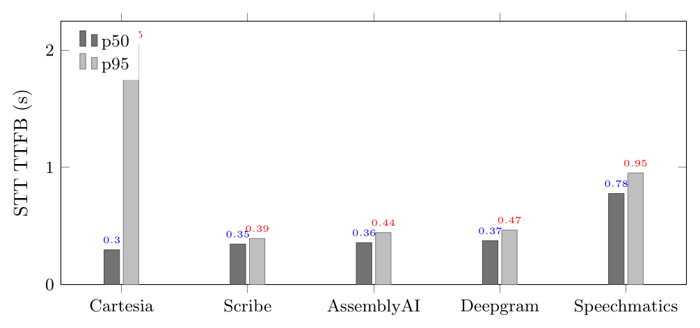
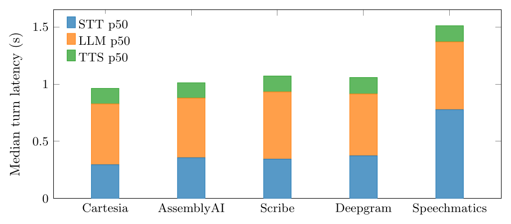
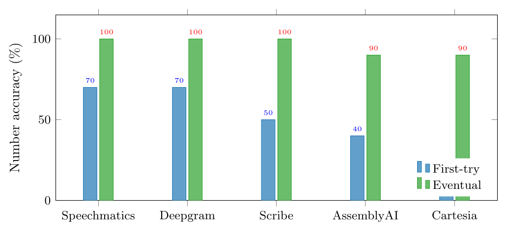
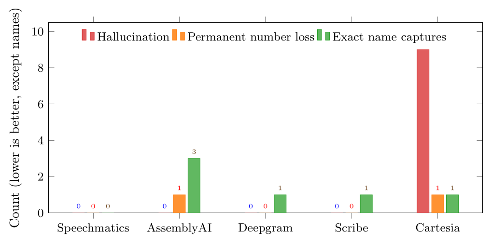
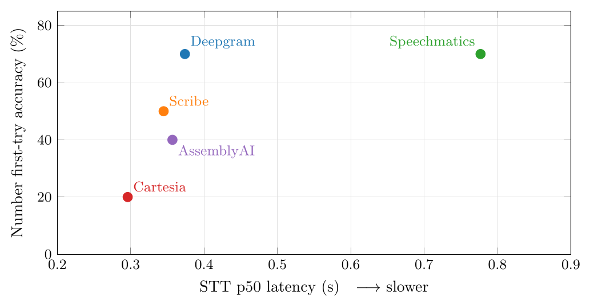

On the telephony layer, the latency of a speech-to-text (STT) engine is a necessary but insufficient property: the objective that actually matters for an AI voice agent is accuracy and reliability under real public switched telephone network (PSTN) conditions. We swapped five streaming STT engines into one identical Pipecat telephony pipeline—holding turn-taking, the language model, the text-to-speech, and the 8 kHz audio path constant—and placed roughly ten live Twilio phone calls through each (about fifty total), each call requiring the assistant to capture a spoken name and a ten-digit callback number. We find that speed does not predict accuracy: the fastest-median engine was the least reliable, hallucinating invented tokens and exhibiting a broken two-second latency tail. We also find that one does not have to trade speed for accuracy. We recommend Deepgram Nova-3 for STT paired with ElevenLabs Flash v2.5 for TTS: Deepgram ties for the best first-try number accuracy (70%) with zero permanent number losses and zero hallucination, at roughly half the latency of the slowest accurate engine, with no critical reliability weakness.
Telephony is the hardest deployment surface for automatic speech recognition, and an AI voice agent that answers phone calls lives or dies on that surface. Four properties make it hard.
Narrowband audio. The PSTN delivers 8 kHz mu-law audio; half the spectral information that wideband models are trained on is simply absent. No amount of upsampling restores the missing high frequencies. An engine excellent on clean 16 kHz microphone audio can degrade sharply on a real phone call.
Names and numbers are the hard tokens. A receptionist's core job is to capture entities: a caller's name and a callback number. These have the least linguistic redundancy. A language model can repair a garbled common word from context; it cannot infer that “016” was meant when the line delivered “015.” Proper nouns are worse: an uncommon name has essentially no language-model prior, so the transcript is whatever the acoustic model emits.
Latency is felt every turn. In a spoken conversation, every turn pays the STT's time-to-first-token (TTFB). Unlike batch transcription, conversational latency is experienced repeatedly and directly as the gap before the agent responds—making TTFB a first-class metric, but not the only one.
Hallucination is a safety issue. Some streaming models, handed unparseable narrowband audio, do not stay silent: they invent plausible tokens. For a voice agent acting on what it “heard,” a fabricated digit run is a correctness and trust failure—the agent confidently stores something the caller never said.
This paper argues a single thesis: on the telephony layer, optimize for accuracy and reliability, not raw speed; and you do not have to trade one for the other. Reliability also spans the whole stack, not the STT alone—the agent must not cut the caller off, a turn-taking property that can live in the text-to-speech layer as much as anywhere else.
We built one Pipecat telephony pipeline and changed exactly one component—the STT engine—across all conditions. Held fixed: turn-taking (a local end-of-turn model over Silero VAD), the LLM (Claude Haiku 4.5), the TTS (ElevenLabs Flash v2.5), and the 8 kHz → 16 kHz audio path. No vocabulary seeding was applied to any engine.
| Engine | Model | Turn handling |
|---|---|---|
| Deepgram | Nova-3 | external (our VAD) |
| AssemblyAI | Universal-3 Pro | external (our VAD) |
| Speechmatics | Ursa (Enhanced) | external (our VAD) |
| ElevenLabs | Scribe v2 Realtime | external (our VAD) |
| Cartesia | Ink-Whisper | external (our VAD) |
Latency was instrumented per service (time-to-first-token). Number accuracy was scored from the assistant's spoken read-back of the caller's number: the speaker said the same ten-digit number clearly on essentially every call, the agent confirmed it (“that's 555-016-2049, correct?”), and we scored the first read-back as correct, fixed-on-retry, or never-correct. A ground-truth check confirmed each batch ran its labelled engine. The sample is one speaker, roughly ten live Twilio calls per engine.
The four fastest engines sit within a narrow band on median TTFB; Speechmatics runs roughly twice as slow. Cartesia owns the fastest median yet a broken two-second worst case (Fig. 1, Fig. 2).


Deepgram and Speechmatics tie for the best first-try number accuracy (70%); both never permanently lost a number. AssemblyAI and Cartesia each stored one permanently-wrong number. The read-back-and-confirm loop lifts every engine to 90–100% eventual accuracy regardless of first-try rate.
| Engine | First-try | Fixed | Never | Eventual |
|---|---|---|---|---|
| Deepgram | 70% | 3 | 0 | 100% |
| Speechmatics | 70% | 3 | 0 | 100% |
| Scribe | 50% | 5 | 0 | 100% |
| AssemblyAI | 40% | 5 | 1 | 90% |
| Cartesia | 20% | 7 | 1 | 90% |

AssemblyAI is the clear leader on the hard proper noun, capturing the difficult name exactly three times; Scribe, Cartesia, and Deepgram manage one each; Speechmatics never captured it exactly. This is a near-mirror image of the number ordering.
| Engine | Exact “hard name” |
|---|---|
| AssemblyAI | 3 |
| Deepgram | 1 |
| Scribe | 1 |
| Cartesia | 1 |
| Speechmatics | 0 |
Only Cartesia hallucinated—nine invented tokens and repeated-digit runs during fumbled numbers—while every other engine produced zero. Combined with its broken latency tail, this disqualifies it for telephony despite the fastest median (Fig. 5).

The thesis figure (Fig. 3) plots latency against accuracy directly: the fastest engine (Cartesia) is the least accurate, the slowest (Speechmatics) is accurate but pays roughly double the latency, and Deepgram occupies the sweet spot—fast and accurate.

Speed ≠ accuracy. Cartesia had the fastest median yet was the least reliable: nine hallucinated tokens and a two-second p95 tail. Raw speed tells you nothing about correctness.
You do not have to trade speed for accuracy. Deepgram matches the most accurate engine on numbers (70%) while running twice as fast as Speechmatics, so the slow engine's latency buys no accuracy advantage.
Reliability spans the whole stack. A voice agent must never hallucinate, must capture names and numbers on a noisy 8 kHz line, and must not cut the caller off. That last property—turn-taking—is not purely an STT concern: in our deployment, Deepgram's own Aura text-to-speech, not its STT, interrupted and cut off speech on the line, which is why we pair the STT with ElevenLabs for synthesis. (This TTS observation is qualitative; the benchmark held the TTS constant and did not measure it.)
Deepgram's STT ties for the best first-try number accuracy (70%) with zero permanent number losses and zero hallucination, yet runs at roughly half the latency of the slowest accurate engine, and captured the hard name once (fewer than AssemblyAI's three, more than Speechmatics' zero). It delivers accuracy, reliability, and speed in one engine, paired with ElevenLabs because Deepgram's own Aura TTS interrupted on the line.
This is a practical engineering benchmark, not a published academic study. The sample is a single speaker (one voice, accent, microphone, and handset) with roughly ten calls per engine, so a 70% vs 66% gap is about one call. There is no ground-truth Word Error Rate; the “AI read-back” accuracy proxy mixes the STT with the language model, and the turn-detection timing that decides whether a confirmation registers. The TTS-interruption finding is a qualitative field observation, not a measured result. Treat the rankings as directional; the patterns are strong but the magnitudes are small-sample.
@techreport{telephony_stt_benchmark_2026,
title = {The Best Speech-to-Text Engine for AI Voice
Agents on the Telephony Layer},
author = {Salim, Mazin and Palakuniyil, Mishahal},
institution = {MM Intelligence},
year = {2026},
url = {https://github.com/therealmazin/telephony-stt-benchmark}
}